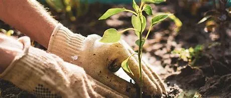
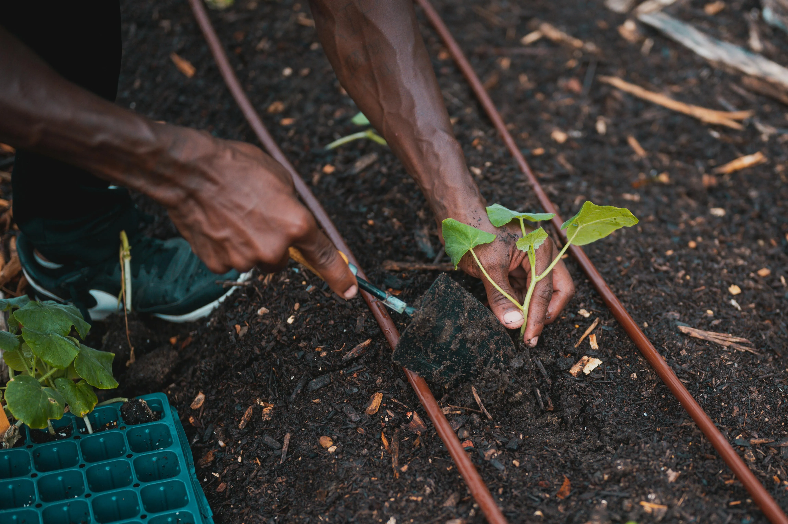
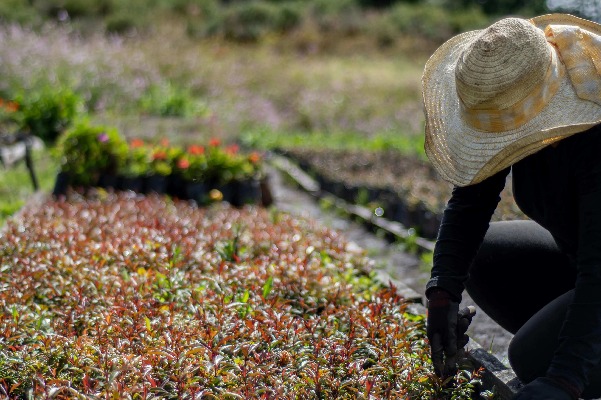

Nos services de plantations
La plantation est l’âme d’un jardin. Elle transforme un espace vide en un lieu de vie, de couleurs et de senteurs. Que ce soit pour un jardin d’ornement, un potager ou un verger, Lucas Jardins vous accompagne dans chaque étape.
Pourquoi faire appel à nos services de plantations ?
- Choix adaptés : Nous sélectionnons avec soin les plantes les mieux adaptées à votre sol, votre climat et vos envies.
- Harmonie esthétique : Nos équipes conçoivent des compositions harmonieuses pour sublimer vos extérieurs.
- Expertise technique : Nous préparons le terrain, plantons dans les règles de l’art et assurons un bon démarrage de chaque végétal.
- Conseils personnalisés : Chaque projet est unique : nous vous guidons dans l’entretien et la croissance de vos plantations.



Nos prestations
➡ Plantation de fleurs et arbustes
Idéal pour égayer un jardin ou créer des massifs colorés et structurés.
➡ Plantation d’arbres
Fruitier, ornemental ou d’ombrage : nous vous aidons à choisir et planter l’arbre qui sublimera votre espace.
➡ Création de potager
Du montage des bacs à la sélection des légumes, nous créons pour vous un coin potager esthétique et productif.
➡ Reboisement et plantations écologiques
Pour un projet responsable, nous proposons également des essences locales favorisant la biodiversité.
Pourquoi choisir Lucas Jardins ?
- Conseils d’experts et accompagnement personnalisé
- Respect du calendrier naturel des plantations
- Matériel et techniques respectueux de l’environnement
- Tarifs transparents et devis gratuit
Contactez-nous pour imaginer ensemble le jardin qui vous ressemble !